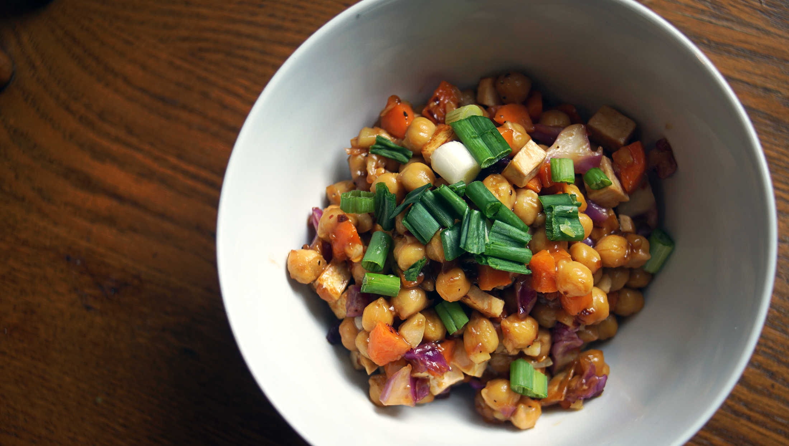

spicy stirfry chickpeas
2 servings — 15 minutes
If someone was to ask me which food I could eat forever without stopping, I'd answer chickpeas. There's a TON of different ways to prepare them, and all of these ways are delicious. They can be baked, squished, pureed, ground, sprouted and baked. Their versatility make my life easier, I can eat them everyday and it doesn't ever get boring.
Nutrition: Legumes is an important part of the diet, and one of the best plant sources of lysine, one of 9 essential amino acids required for good health. Protein is necessary for muscles, bones, hormones, digestive enzymes, to absorb nutrients and to rebuild cells. If you eat 1/2 cup dry beans a day, your daily protein needs are covered.
Another plus is that dry chickpeas keep a long, long time. If you keep them in air-tight containers they will last even longer, because moisture and oxygen is the enemy of all beans. Oxygen makes the bean oils rancid overtime. You can store them for 5+ yrs if you add oxygen absorbers (packet consisting of powdered iron oxide) to the containers. I like to buy them in bulk and cook them as needed. An advantage of buying them dry is that it is cheap, and they taste better (honest). Read about storing dry beans.
Recommendations
Adding a bay leaf, a bit of onion or a clove or two of garlic to the cooking water add a subtle seasoning to the chickpeas and boost flavor.
 chickpeas 250 g, cooked
chickpeas 250 g, cooked tofu 150g cubed, firm
tofu 150g cubed, firm soy sauce 10 ml
soy sauce 10 ml balsamic vinegar 5 ml
balsamic vinegar 5 ml arrowroot starch 15 ml
arrowroot starch 15 ml salt pinch
salt pinch black pepper pinch
black pepper pinch
marinade
- Cook 125 g (3/4 cup) of dried chickpeas (see instructions), or use 1 can (15oz).
- Mix the marinade ingredients together in a wide bowl, and add the 250 g of cooked chickpeas (or 15-19 oz can) and 150 g (1/3 pack firm tofu) of cubed tofu. Leave to marinate at least a few hours. Overnight is even better.
 maple syrup 15 ml
maple syrup 15 ml- soy sauce 15 ml
- balsamic vinegar 30 ml
- arrowroot starch 15 g
 sesame oil 5 ml
sesame oil 5 ml
sauce
- In a small bowl, combine the ingredients for the sauce: mix 15 ml (1 tbsp) of maple syrup, 15 ml (1 tbsp) of soy sauce, 30 ml (2 tbsp) of balsamic vinegar, 15 g (1 tbsp) arrowroot starch and 5 ml (1 tsp) of sesame oil.
 carrots 1
carrots 1 red cabbage 40 g
red cabbage 40 g scallions 2 stalks
scallions 2 stalks garlic 3 cloves
garlic 3 cloves ginger root equal to garlic
ginger root equal to garlic chili pepper flakes 15 g
chili pepper flakes 15 g sichuan peppercorns 5g, whole
sichuan peppercorns 5g, whole- salt pinch
- black pepper pinch
stir fry
- Peel and slice 3 cloves of garlic and equal amounts of ginger thinly, and chop 2 stalks of scallions in a size matching their diameter. Cut 1 carrot (peel carrot) and ~40 g of red cabbage into bite-sized bits.
- Add 15 ml (1 tbsp) of vegetable oil, then warm pan to high heat. When oil is hot, add ~15 g (1 tbsp) of chili pepper flakes and 5 g (1 tsp) of sichuan peppercorns. Stir-fry until they're crisp and that the mixture is spicy and fragrant. Careful not to burn the spices, remove from heat for a bit if overheating.
- Add the chickpeas, tofu, carrot and red cabbage and fry over high heat, stirring constantly. After a minute, add the ginger root, garlic and scallions and stir-fry for a few more minutes.
- Stir the sauce, and add it to the pan while stirring and tossing. When the sauce starts to thicken, remove from heat and serve.